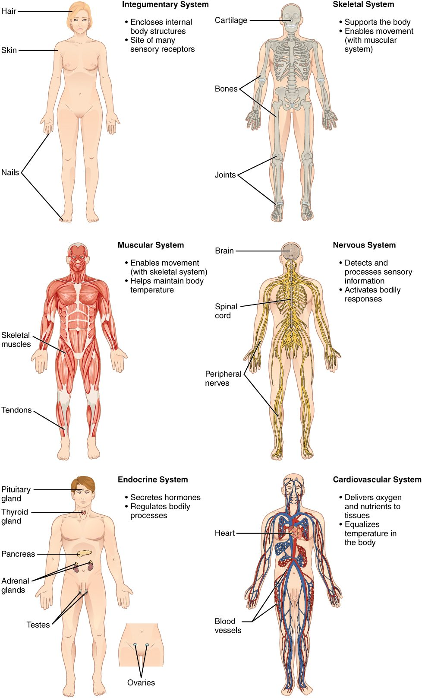

Anatomy and physiology: two questions about the same body
Think about your stomach. You can ask what it looks like: a J-shaped bag with a thick muscular wall and a folded lining. You can also ask how it works: how the wall squeezes and churns food, and how the lining releases digestive juice. The first question is anatomy. The second is physiology. The levels of organization in anatomy, from atoms up to a whole person, connect the two, and they are the frame for everything else in this course.
Anatomy (ana- = apart, -tomy = cutting) is the study of the body's structures: their shape, size, parts and position. The name comes from dissection, the oldest way to study them. Anatomy splits by scale and by approach:
- Gross anatomy studies structures you can see without magnification, such as the heart or a bone.
- Microscopic anatomy studies structures too small to see without a microscope, such as the cells lining your stomach.
- Regional anatomy studies every structure in one part of the body together: the bones, muscles, vessels and organs of the hand, for example. Surgeons think this way.
- Systemic anatomy studies one organ system at a time throughout the body: all the bones, then all the muscles. Most A&P courses, this one included, are organized this way.
Physiology (physi/o = nature, -logy = study of) is the study of how the body's structures work: the chemical and physical events that make a heart beat or a kidney make urine. Physiology in this course is always written as mechanism. You will read "stretch of the stomach wall triggers stronger contractions", never "the stomach contracts because it wants to digest food".
The two subjects cannot be pulled apart. What a structure can do follows from how it is built. The thin walls of the smallest blood vessels let substances pass through them; a thick-walled vessel could not do that job. This link between structure and function returns in every chapter.
The levels of organization
Your body is built in levels. Each level is made of units from the level below, and each level can do things its parts cannot do alone. Figure 1 traces the six levels through the urinary system. Here they are traced through your stomach.

- Chemical level. An atom is the smallest unit of an element, a pure chemical substance such as carbon, hydrogen, oxygen or nitrogen. Atoms join to form a molecule, such as water (two hydrogen atoms and one oxygen atom). Your stomach is built from water and from very large molecules made mostly of carbon, hydrogen, oxygen and nitrogen. You will meet atoms and molecules in detail in the chemistry topics that follow this chapter.
- Cellular level. A cell (Latin cella = small room) is the smallest unit that can carry out the activities of life on its own. Molecules arranged in the right way make a cell. Your stomach wall contains muscle cells that shorten and pull, and lining cells that release digestive juice.
- Tissue level. A tissue (from the French for "woven") is a group of similar cells, plus the material around them, that work together to do one job. Sheets of these muscle cells in your stomach wall form a tissue that contracts as one. The study of tissues is histology (hist/o = tissue, -logy = study of).
- Organ level. An organ (Greek organon = tool) is a structure made of two or more kinds of tissue that has a recognizable shape and does a specific job. Your stomach is an organ. It combines a lining that releases digestive juice, muscle layers that churn, and supporting tissue that holds it together and carries its blood supply.
- Organ system level. An organ system is a group of organs that work together on a shared job. Your stomach is one organ of the digestive system, which also includes the esophagus, the intestines, the liver and the pancreas.
- Organism level. An organism is a whole living individual: you. All your organ systems working together make an organism that can survive.
The rule behind the list: each level is built from the one below, and gains abilities its parts lack. A single one of those shortening cells can pull, but it cannot churn food. Only a whole stomach wall, with sheets of shortening cells running in different directions, can do that.
The eleven organ systems
Most A&P courses group your organs into eleven organ systems. Figure 2 and Figure 3 show them all. Learn each system with its major organs and its main job.


| System | Major organs | Main job |
|---|---|---|
| Integumentary (Latin integumentum = covering) | Skin and the structures that grow from it, such as hair and nails | Covers and protects the body; limits water loss; helps control body temperature |
| Skeletal | Bones and joints | Supports the body, protects organs, gives muscles something to pull on, stores calcium, makes blood cells |
| Muscular | The muscles attached to bones | Moves the body and produces body heat |
| Nervous | Brain, spinal cord, and the nerves that run from them to every body part | Detects changes and sends fast electrical signals that control responses |
| Endocrine (endo- = within, -crine = to release) | Pituitary, thyroid, adrenals, pancreas, and the gonads (testes or ovaries) | Releases hormones into the blood that control slower processes such as growth |
| Cardiovascular (cardi/o = heart, vascul/o = small vessel) | Heart, arteries, veins, capillaries and blood | Pumps blood that carries oxygen, nutrients, wastes and heat around the body |
| Lymphatic | Thymus, spleen, and a network of thin vessels with small filtering nodes along them | Returns fluid that leaks out of blood vessels back to the blood; houses immune cells |
| Respiratory (re- = again, spir = breathe) | Nose, trachea (windpipe) and lungs | Brings oxygen into the blood and removes carbon dioxide |
| Digestive | Mouth, esophagus, stomach, intestines, liver, gallbladder, pancreas, appendix | Breaks food down, absorbs nutrients, eliminates the remains as feces |
| Urinary | Kidneys, ureters, urinary bladder, urethra | Filters the blood, removes wastes as urine, controls water balance |
| Reproductive | Testes in males; ovaries, uterine tubes, uterus and vagina in females | Produces sex cells; the female system also supports a developing baby |
Names worth knowing now
- The gonads (gon- = seed, offspring) are the organs that make sex cells: the testes (singular testis) in males and the ovaries in females. Each gonad belongs to both the reproductive and the endocrine systems.
- The uterine tubes (also called the fallopian tubes) carry an egg cell from each ovary to the uterus, the muscular organ where a baby develops. This course uses the name uterine tube.
- The ureters are two tubes that carry urine from the kidneys to the urinary bladder. The single urethra carries urine from the bladder out of the body. The names are easy to swap; remember that there are two ureters, one per kidney.
- The pleura (Greek = side, rib) is a thin, slippery membrane that covers each lung and lines the inside of the chest wall. The pericardium (peri- = around, cardi/o = heart) is the similar sac around the heart. You will see how both are built in the body cavities topic, later in this chapter.
- The spleen is a fist-sized lymphatic organ high on the left side of the abdomen, behind the stomach, that filters blood. The thymus sits in the chest above the heart; it is large in children and shrinks in adults.
Some organs sit in two systems. The pancreas releases digestive juices into the intestine (digestive system) and hormones into the blood (endocrine system).
Arteries, veins and capillaries: a first look
The cardiovascular system uses three kinds of blood vessels. The names depend on the direction of flow relative to the heart, not on how much oxygen the blood carries.
- An artery carries blood away from the heart. Arteries have thick, muscular walls, because the heart pushes blood into them under high pressure.
- A vein carries blood back toward the heart. Veins have thinner walls, and blood in them is under lower pressure.
- A capillary (Latin capillaris = hairlike) is the smallest vessel, a tube whose wall is a single layer of flat cells. Capillaries link the smallest arteries to the smallest veins. Their thin walls let oxygen, nutrients and wastes pass between the blood and the cells around them.
The rule: arteries away, veins toward, capillaries exchange. Most arteries carry blood high in oxygen, but not all. The arteries that run from your heart to your lungs carry blood low in oxygen, because that blood has just come back from the body. This is the short version; the vessel structure topic in the cardiovascular chapter covers vessel walls in full.
What makes something alive
A rock and a cell are both made of atoms. Only the cell is alive. Living things share a set of characteristics:
- Organization: living things are built in the levels described above.
- Metabolism (meta- = change, bol = throw): the sum of all the chemical changes in your body. Some build large molecules from small ones, and use energy. Others break large molecules down, and release energy.
- Responsiveness: the ability to detect a change and react to it. You pull your hand off a hot pan before you have finished thinking about it.
- Movement: of the whole body, of materials inside it (blood around the vessels, food along the gut), and even of single cells.
- Growth: an increase in size, from more cells, bigger cells, or more material between cells.
- Development: the changes an organism goes through over its life, including cells becoming specialized for one job.
- Reproduction: making new cells, for growth and repair, and making a new organism.
To stay alive, your cells also depend on a few things from outside:
- Oxygen. Your cells use oxygen to release most of the energy stored in food molecules. Without it, the energy supply falls within minutes, and brain cells are the first to fail.
- Nutrients. A nutrient is a substance from food that your body uses for energy, building material or chemical control. Water, minerals and vitamins are nutrients too.
- Water. Most of your body mass is water, and nearly every chemical change in your cells happens dissolved in it.
- A narrow range of temperature. Chemical changes in cells speed up as temperature rises and slow as it falls. Too far in either direction and the large molecules in cells lose their working shape.
- Suitable air pressure. Air pressure pushes air into your lungs and oxygen into your blood. High on a mountain, where air pressure is lower, less oxygen enters your blood with each breath.
Holding conditions within a normal range
Take your temperature in a warm room and again after a cold walk. The number barely moves. Your body temperature stays close to 37 °C (98.6 °F), within a narrow normal range, the band of values found in healthy people. The same holds for the water, sodium and oxygen content of your blood, and for many other conditions inside you.
The general rule: your body keeps many internal conditions within a normal range, even when the outside world changes. It does this with mechanisms that detect a change and trigger a response that pushes the value back. Cold skin triggers shivering: your muscles contract in rapid, small bursts, which make heat, and your temperature climbs back. When these mechanisms fail, the value drifts out of range, and that is what illness often is.
This is the short version. The full mechanism, with the parts of a feedback loop and how each part works, returns later in Foundations, in the topic on feedback loops that closes the cell communication chapter.
Organ systems depend on each other
No organ system works alone. Consider what happens when the kidneys fail. The kidneys stop removing water and wastes from the blood. Water builds up in the blood and the fluid around cells, so the ankles swell and fluid collects in the lungs. The respiratory system can then move less oxygen into the blood. The heart pumps against the extra fluid load. One failing organ, and the urinary, cardiovascular and respiratory systems are all in trouble.
The rule: a change in one system changes conditions for the others. Your muscles need oxygen from the respiratory system, delivered by the cardiovascular system, from nutrients absorbed by the digestive system, with wastes removed by the urinary system. When you study one system, always ask which others it depends on and which depend on it.